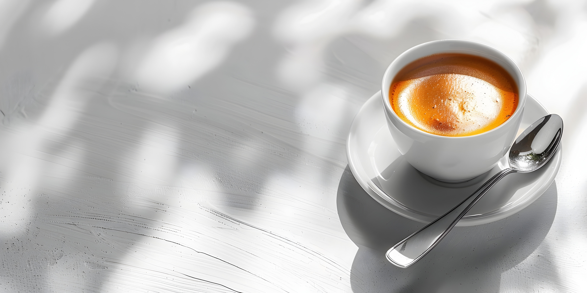
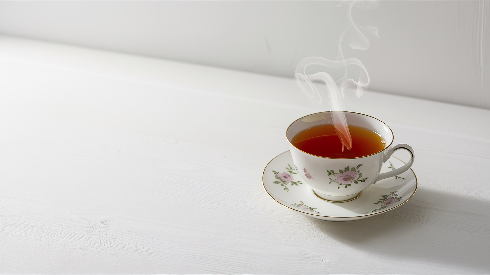
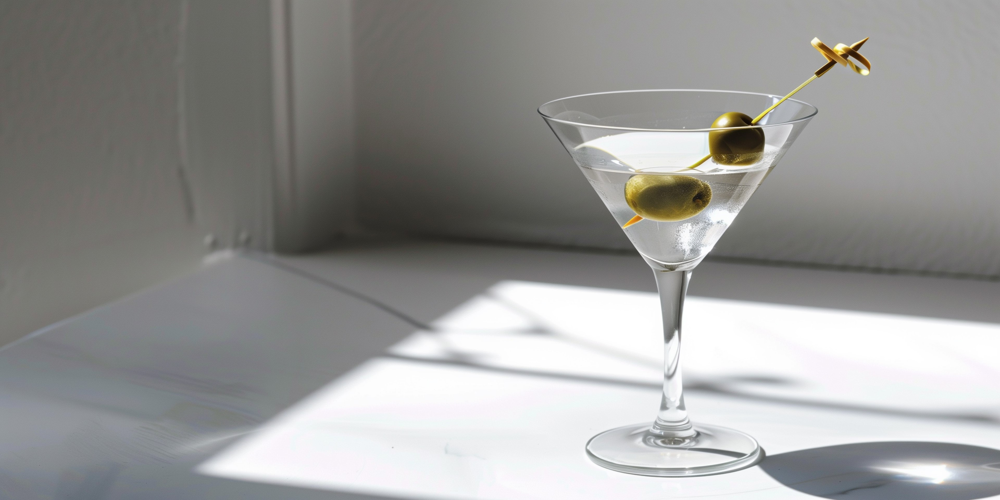

Menu
Espressos & Brews
-
The Archive Espresso
A meticulously sourced blend, roasted to precision. Bold, but smooth – a reflection of time, distilled into a cup.
€5.00
-
Americano
Strong. Profound. A coffee forged in contrast, featuring the purest coffee essence served over a minimalist canvas of water.
€4.50
-
0 Affogato
Rich vanilla bean gelato, crowned with the indulgence of our signature espresso, a delicate interaction of temperature and taste.
€7.50
-
Margiela Latte
A soft embrace of steamed milk enveloping a robust shot of espresso, presented in its purest form. Minimal indulgence, maximal pleasure.
€6.50
-
Distilled Cold Brew
A slow extraction process that honors the passage of time. This cold brew captures depth, clarity, and a smooth finish—perfect for those who appreciate the art of patience.
€5.50
Le Thé du Temps
-
Earl Grey Couture
A refined blend of black tea, perfumed with the elegance of bergamot. Subtle, yet distinct. A timeless classic.
€5.00
-
Jasmine Mist
A delicate green tea, infused with the fresh fragrance of jasmine. Soft, floral, and impeccably balanced.
€4.50
-
L'Herbe Tranquille
A refreshing infusion of calming herbs—lemon balm, chamomile, and a hint of mint. A quiet whisper of nature’s serenity.
€4.00
-
Chai Épice
A bold yet fragrant blend of black tea and aromatic spices, perfectly brewed to warm and awaken the senses.
€5.50
-
Matcha Éphémère
Finely ground green tea, whisked to a frothy finish. Smooth, deep, with a fleeting yet invigorating aftertaste.
€6.00
Les Délices Perdus

-
Croissant
Layers of buttery perfection, baked to an immaculate golden hue. A delicate flake for each moment you savor.
€4.00
-
Hidden Ganache Tart
Unseen under a crisp shell, a dark chocolate ganache awaits, with a hint of salt and subtle undertones of bitterness—an invitation to discovery.
€6.50
-
Bare Almond Biscuit
Flourless, minimal, and refined. Ground almonds baked to perfection, showcasing the beauty in restraint.
€3.00
-
Black Sesame Meringue
A delicate meringue, dusted with black sesame and finished with an air of sweetness. A fleeting moment of lightness.
€4.50
-
Modernist Yuzu Sorbet
A refreshing, minimalist dessert—poured from nature itself. Tart yuzu, cold and clean, a seasonal reflection of light and clarity.
€5.00
Evening Distillations
-
Le Negroni de Nuit
A reimagined classic, with gin, Campari, and vermouth, balanced with a touch of cold brew coffee for a deep, refined complexity. A perfect balance of bitter and bold.
€12.00
-
La Fleur de Thé
A delicate cocktail blending gin with a hint of jasmine tea, lemon, and elderflower syrup. A floral essence that whispers of tranquility and grace.
€11.00
-
Chai & Cacao Manhattan
An unexpected yet harmonious blend of dark rum, spiced chai syrup, and cacao bitters. Bold yet comforting—perfect for an evening of reflection.
€10.50
-
Café d'Or
A sophisticated infusion of cold brew coffee, cognac, and vanilla liqueur. A rich, velvety texture with a hint of warmth—a luxurious evening companion.
€12.50
-
L'Infusion de Minuit
A calming yet refined mix of Earl Grey-infused gin, honey, and lemon, with a dash of lavender bitters. A perfect reflection of evening serenity.
€10.00